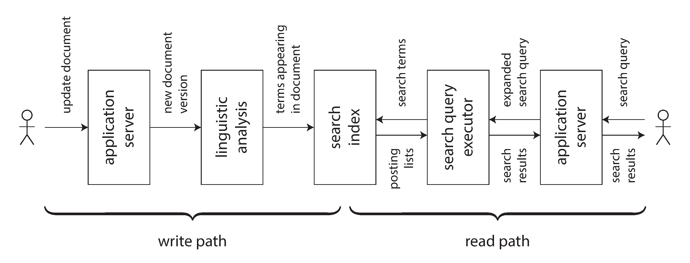

Complex applications use data in several different ways. You inevitably need to cobble together multiple pieces of software.
"It’s hard enough to get one code path robust and performing well — trying to do everything in one piece of software almost guarantees the implementation will be poor."
Combining Specialized Tools
Common pattern: OLTP database + full-text search index + analytics warehouse + cache + ML models.
How to keep them all in sync?
System of record — data is first written here (source of truth)
CDC / Event log — capture changes in order
Derived systems — search index, cache, warehouse follow the log
Key: funnel all writes through one system that decides ordering. Total order broadcast → consistent derived views.
Derived Data vs Distributed Transactions
Distributed Transactions
Ordering via locks (2PL)
Atomic commit ensures exactly-once
Provides linearizability
Poor fault tolerance (XA)
Limited scalability
Log-Based Derived Data
Ordering via log
Deterministic retry + idempotence
Asynchronous (eventual consistency)
Better fault tolerance
Better scalability
Log-based derived data is the most promising approach for integrating different data systems — but we need ways to get stronger guarantees on top.
Limits of Total Ordering
Constructing a totally ordered event log is feasible for small systems (single-leader replication). But at scale:
📊 Throughput: single leader can’t handle all events → partition the log → order between partitions is ambiguous
🌍 Geo-distribution: separate leader per datacenter → undefined ordering across datacenters
🔧 Microservices: each service has independent state → no global order across services
📱 Offline clients: client-side state updated locally → diverges from server order
Total order broadcast = consensus. Scaling consensus beyond one node is an open research problem.
Capturing Causality
Example: Alice unfriends Bob, then posts a rude message about him.
Friendship stored in one system, messages in another
If the unfriend event is processed after the message event → notification sent to Bob!
The causal dependency between unfriend and message is lost
Possible approaches:
Logical timestamps for ordering without coordination
Log the state the user saw before making a decision (provenance)
Conflict resolution algorithms for out-of-order events
An open problem — patterns for capturing causal dependencies efficiently are still emerging.
Batch & Stream: Two Sides of the Same Coin
Both produce derived datasets: search indexes, materialized views, recommendations, aggregate metrics.
📦 Batch
Bounded input (known, finite)
Reprocess entire historical dataset
Deterministic, pure functions
🔄 Stream
Unbounded input (never ends)
Process events as they arrive
Managed, fault-tolerant state
Spark emulates streams on batch (microbatching). Flink emulates batch on streams. The distinction is blurring.
Reprocessing for Evolution
Derived views allow gradual evolution:
Maintain old schema and new schema side by side
Start with a small number of users on the new view
Gradually increase → eventually drop the old view
🚂 Railway Analogy
19th-century England had competing rail gauges. To convert, they added a third rail (dual gauge), allowing both train types to run simultaneously. Gradual migration — no shutdown needed!
Every stage is reversible. Reduce risk → move faster.
The Lambda Architecture & Beyond
Lambda Architecture
Run batch (accurate but slow) and stream (fast but approximate) in parallel. Merge results.
Instead of one integrated DB product → various software on different machines, different teams
Advantages of loose coupling:
🛡️ System level: async event streams buffer failures — faulty consumer catches up later
👥 Human level: teams develop independently with well-defined interfaces
What’s missing: the unbundled-database equivalent of the Unix shell — a high-level language for composing storage and processing. Imagine: mysql | elasticsearch
Designing Around Dataflow
From passive databases to reactive data pipelines
Application Code as a Derivation Function
Every derived dataset is created by a transformation function:
Secondary index: pick indexed fields, sort by value — cookie-cutter (built into DBs)
Full-text search: language detection, stemming, synonym identification, inverted index
ML model: feature extraction + statistical analysis on training data
Cache: aggregate data in the form displayed in the UI
Most interesting derivations require custom application code. Databases struggle here — triggers and stored procedures are afterthoughts.
Solution: separation of code and state. App code in containers (K8s, Mesos). State in databases. They interact but remain independent.
Spreadsheets Already Got It Right
"Even spreadsheets have dataflow programming capabilities that are miles ahead of most mainstream programming languages."
In a spreadsheet: change a cell → all dependent formulas automatically recalculate.
This is exactly what we want at a data systems level:
Record changes → indexes auto-update
Source data changes → cached views auto-refresh
Training data changes → model auto-retrain
Most databases are passive (you poll for changes). We need subscriptions — reactive dataflow.
VisiCalc had this in 1979. We’re still catching up.
Stream Processors vs Services
🌐 Microservices (REST/RPC)
Synchronous request/response. Query exchange rate service on each purchase.
Network latency + failure risk on every call.
🔄 Dataflow (Streams)
Subscribe to exchange rate updates. Store current rate locally. Query local DB on purchase.
Faster + more robust. No network request at all!
"The fastest and most reliable network request is no network request at all!"
This is a stream-table join between purchases and exchange rate updates.
Write Path & Read Path
Two journeys of data:
✍️ Write Path (Eager)
Data comes in → batch/stream processing → derived datasets updated. Precomputed, regardless of queries.
📖 Read Path (Lazy)
User requests data → read from derived dataset → maybe more processing → response.
Derived dataset = meeting point. Trade-off: how much work at write time vs read time?

Shifting the Boundary
Indexes, caches, and materialized views shift work from read path to write path:
No index: zero write-time work, expensive reads (full scan, like grep)
Index: moderate write-time work (update index), faster reads
Cache common queries: more write-time work (precompute results), instant reads
Precompute all queries: impossible (infinite queries!) — the extreme
The Twitter home timeline (Chapter 1) was exactly this trade-off! After 500 pages, we’ve come full circle.
Stateful, Offline-Capable Clients
Traditional web: stateless clients, servers have authority over data.
Modern reality: mobile apps and SPAs maintain significant client-side state.
📱 Offline-first: use local DB on device, sync with server in background
On-device state = cache of server state
Pixels on screen = materialized view of model objects
Model objects = local replica of remote datacenter state
Push state changes all the way to client devices = extending the write path to the end user.
ReactReduxElm use event streams internally — same pattern as event sourcing!
End-to-End Event Streams
State changes flowing through the entire pipeline:
User interaction on Device A triggers state change
Event log → stream processors → derived data systems
Push notification to Device B displaying the new state
End-to-end latency: under one second. Instant messaging and online games already work this way.
Why don’t we build all applications this way?
Because request/response is deeply ingrained in our databases, libraries, frameworks, and protocols. We need to shift from request/response to publish/subscribe dataflow.
But none of these alone can prevent a user from submitting a duplicate request when their first one times out!
"The function in question can completely and correctly be implemented only with the knowledge and help of the application standing at the endpoints of the communication system."
— Saltzer, Reed, Clark (1984)
Solution: pass a unique request ID (UUID) from the end-user client all the way to the database. Deduplicate end-to-end.
Duplicate Suppression
The classic bank transfer example:
BEGIN TRANSACTION;
UPDATE accounts SET balance = balance + 11.00 WHERE account_id = 1234;
UPDATE accounts SET balance = balance - 11.00 WHERE account_id = 4321;
COMMIT;
If client loses connection after COMMIT but before receiving response → retries → $22 transferred instead of $11!
TCP dedup doesn’t help (new connection). 2PC doesn’t help. Need application-level dedup with a request ID:
INSERT INTO requests (request_id, from_account, to_account, amount)
VALUES('0286FDB8-...', 4321, 1234, 11.00);
-- UNIQUE constraint on request_id prevents double execution
Enforcing Constraints
Uniqueness constraints require consensus: which of several concurrent requests is accepted?
Most common: single leader decides (single point of coordination)
Scale out: partition by the unique value (e.g., hash of username)
Async multi-master → ruled out (conflicting writes accepted simultaneously)
With log-based messaging:
Append username request to log partition (by hash of username)
Stream processor reads sequentially → first request wins, others rejected
Client watches output stream for success/rejection
Same as implementing linearizable storage using total order broadcast (Chapter 9)!
Multi-Partition Request Processing
Bank transfer touches 3 partitions: request ID, payer account, payee account.
Traditional approach: atomic commit across all 3 partitions. Expensive!
Alternative without distributed transactions:
1. Client appends transfer request (with unique ID) to log partition
2. Stream processor reads request → emits debit + credit instructions to separate partitions
End-to-end integrity checking gives confidence to move faster. Like automated testing: find bugs early, reduce risk of changes.
Doing the Right Thing
Ethics, privacy, and our responsibility as engineers
Predictive Analytics & Bias
Data analysis to predict weather or disease spread is one thing. Predicting whether someone gets a loan, job, or insurance is another.
Algorithms that say “no” can systematically exclude people from society — “algorithmic prison”
ML models learn and amplify biases in training data
Correlated features can be proxies for protected traits (zip code ≈ race)
“Machine learning is like money laundering for bias”
Predictive analytics extrapolate from the past. If the past is discriminatory, they codify discrimination.
Data and models should be our tools, not our masters.
Responsibility & Accountability
When humans make mistakes, they can be held accountable. When algorithms make mistakes, who is responsible?
Self-driving car causes accident — who?
Credit scoring discriminates by race — any recourse?
ML decision under judicial review — can you explain how it decided?
Feedback loops make things worse:
Bad credit score → can’t find work → poverty → worse credit score → harder to find work → …
A downward spiral driven by poisonous assumptions hidden behind mathematical rigor.
Privacy and Surveillance
"Try replacing the word data with surveillance. How about this: ‘In our surveillance-driven organization we collect real-time surveillance streams and store them in our surveillance warehouse.’"
We have built the greatest mass surveillance infrastructure the world has ever seen:
Smartphones tracking location 24/7
Smart TVs, voice assistants, baby monitors with microphones
IoT devices with terrible security records
Privacy ≠ keeping everything secret. It means the freedom to choose what to reveal to whom.
When companies collect data, privacy rights are transferred from individual to corporation.
Data: Asset or Toxic Waste?
💰 Data as Asset
Startups valued by “eyeballs.” Data brokers buy and sell personal info. Behavioral data is the core product.
☠️ Data as Toxic Asset
Breaches happen constantly. Governments want it. Bankrupt companies sell it. Hard to secure.
Balance the benefits of data with the risk of it falling into the wrong hands.
"It is poor civic hygiene to install technologies that could someday facilitate a police state."
The Industrial Revolution Parallel
"Data is the pollution problem of the information age, and protecting privacy is the environmental challenge. … Just as we look back today at the early decades of the industrial age and wonder how our ancestors could have ignored pollution … our grandchildren will look back at us during these early decades of the information age and judge us on how we addressed the challenge of data collection and misuse."
— Bruce Schneier
It took decades for environmental regulations, workplace safety, and child labor laws. We need the equivalent safeguards for the information age.
💡 Based on Ch12 "End-to-End Argument". TCP retries and DB transactions ensure reliability within each layer — but the gap between COMMIT and client acknowledgment is where duplicates sneak in. Only application-level idempotency solves it end-to-end.
Summary
Bringing it all together — the future of data systems
Key Takeaways
🔧 No single tool serves all use cases — compose specialized systems with batch/stream processing
📋 Derived data: one system of record, others follow via CDC or event logs
🏗️ Unbundling databases: build your own “database” from composable components
🔄 Dataflow: reactive systems where state changes propagate automatically (like spreadsheets)
✍️📖 Write path + read path: every index/cache/view shifts work between the two
"We, the engineers building these systems, have a responsibility to carefully consider the consequences and to consciously decide what kind of world we want to live in."
Build systems that are:
🛡️ Reliable
Fault-tolerant, correct, auditable
📈 Scalable
Composable, loosely coupled, evolvable
🤝 Humane
Ethical, privacy-respecting, accountable
Thank you for joining this Knowledge Transfer series!
B) How to design custom hardware and firmware stacks for ultra-low-latency storage engines at scale
C) Network protocols
D) How to combine tools and technologies to build reliable, scalable, and maintainable data systems
Answer: D) Chapter 12 explores how to combine tools from previous chapters to build reliable, scalable, and maintainable applications.
Q2Data Integration
What is data integration?
A) Ensuring that data reaches all the right places, in the right form — the most important thing to get right
B) Data compression
C) Database migration
D) Moving data between systems in scheduled migrations to keep schemas and formats aligned over time
Answer: A) Data integration is about making sure data ends up in all the right derived forms and systems consistently.
Q3No One Tool
What does the chapter argue about using a single data tool?
A) One tool is enough
B) Use a single relational database with extensions so one platform handles every workload pattern
C) No single tool can serve all data needs — you must combine specialized tools for different access patterns
D) Use only NoSQL
Answer: C) No single tool can satisfy all data storage, querying, and processing needs. Different tools are optimized for different access patterns.
Q4Derived Data
What is derived data?
A) Original source data
B) Data computed from other data — search indexes, materialized views, ML model predictions, caches
C) Data retained mainly for compliance audits, without serving active queries or powering derived views
D) Compressed data
Answer: B) Derived data is created by transforming or processing source data — examples include search indexes, caches, and materialized views.
Q5Write Path
What is the write path?
A) The pipeline that processes data eagerly as it's written — updating derived views and indexes immediately
B) The route write requests take through load balancers and proxies before reaching storage replicas
C) Disk write speed
D) Memory allocation
Answer: A) The write path processes data proactively at write time, updating derived data systems (like indexes) as new data arrives.
Q6Read Path
What is the read path?
A) Processing that happens lazily when a user makes a query — reading and transforming data on demand
B) The process that prioritizes CPU threads while queries wait in the operating system scheduler
C) Disk read speed
D) Network download
Answer: A) The read path handles queries: it reads data and performs any necessary transformations at query time.
Q7Precomputation
What is the trade-off between write path and read path?
A) More work on the write path (precomputation) means less work on the read path (faster queries), and vice versa
B) There is no trade-off because both parameters can be set to maximum for optimal results
C) Write is always better
D) Read optimization always lowers both write cost and query latency when indexes are added aggressively
Answer: A) Doing more work eagerly on the write path (precomputing derived data) makes reads faster, at the cost of slower writes.
Q8Full-Text Search
How can a full-text search index be viewed?
A) As derived data — an index built from source documents that can be rebuilt anytime
B) As an independent datastore that accepts direct writes and becomes the canonical source for documents
C) As source data
D) As a primary database
Answer: A) A full-text search index is derived from the source documents. If the index is lost, it can be rebuilt from the original documents.
Q9Unbundling
What does 'unbundling the database' mean?
A) Breaking hardware
B) Splitting one database cluster into smaller shards while keeping storage and indexing tightly coupled
C) Decomposing database functionality into separate specialized components connected by data flows
D) Removing indexes
Answer: C) Unbundling means breaking apart the monolithic database into specialized components (storage, indexing, caching) connected by streams/logs.
Q10Unix Analogy
How is unbundling similar to the Unix philosophy?
A) Both use the same hardware
B) A single computer exhibits the same nondeterministic behavior as a distributed system under all conditions
C) Both use the same code
D) Like Unix pipes compose simple tools, unbundling composes specialized data tools via event logs/streams
Answer: D) Just as Unix composes simple tools via pipes, data systems can compose specialized tools via event logs/streams.
Q11Event Log
What role does the event log play in data integration?
A) A durable feed used to replay system changes after failures, but not the primary source of truth
B) The central, ordered sequence of events that feeds all derived systems — the system of record
C) Only for debugging
D) Only for auditing
Answer: B) The event log serves as the system of record from which all derived data systems are built and maintained.
Q12Total Ordering
Why is total ordering of events important?
A) It ensures all derived systems process events in the same order, maintaining consistency
B) Packet checksums are a mechanism for encrypting the payload of network messages end-to-end
C) Checksums on network packets are primarily used for data compression rather than integrity verification
D) For display
Answer: A) Total ordering ensures all derived data systems see events in the same sequence, keeping them consistent.
Q13Deterministic
Why must transformations from events to derived data be deterministic?
A) For performance
B) So the same input always produces the same output — enabling reliable rebuilds and reprocessing
C) For readability
D) Checksums on network packets are primarily used for data compression rather than integrity verification
Answer: B) Deterministic transformations ensure you can always rebuild derived data from the event log and get the same result.
Q14Idempotent
Why is idempotence important in data integration?
A) For security
B) It reduces processing latency by skipping duplicate checks and accepting occasional conflicts
C) It makes retries safe — applying the same event twice produces the same result as once
D) For storage
Answer: C) Idempotence means applying an operation multiple times has the same effect as once, making failure recovery and retries safe.
Q15End-to-End Argument
What is the end-to-end argument?
A) Security features in lower network layers are sufficient to guarantee correctness without app checks
B) A low-level network protocol that handles message framing and delivery between nodes
C) Always use compression
D) Low-level reliability mechanisms are not sufficient — the application must implement end-to-end checks for correctness
Answer: D) The end-to-end argument: correct behavior can only be guaranteed if the application-level checks are in place, not just lower-level mechanisms.
B) TCP guarantees exactly-once effects across retries because packets are globally deduplicated between sessions
C) TCP is stateless
D) TCP eliminates duplicates within a connection, but not across retried application requests or database transactions
Answer: D) TCP prevents duplicate packets within a connection, but application-level retries (e.g., due to timeouts) can still cause duplicates.
Q17Unique IDs
How can application-level duplicates be suppressed?
A) By timestamps
B) By encryption
C) By including a unique request ID — the server deduplicates based on this ID
D) By replaying all requests after failures and trusting downstream systems to ignore duplicates automatically
Answer: C) Including a unique operation identifier (like a UUID) allows the server to detect and suppress duplicate requests.
Q18Operation ID
What is an operation identifier?
A) A unique token generated by the client that identifies a specific end-to-end operation for deduplication
B) A session token
C) A database ID
D) A rotating API credential used by services to authenticate clients during each request attempt
Answer: A) An operation identifier uniquely tags a user action end-to-end, enabling deduplication even across retries and crashes.
Q19Timeliness
What is timeliness in data systems?
A) Assigning precise timestamps to each event so histories can always be reconstructed consistently
B) Users see an up-to-date state — read-after-write consistency, ensuring recent writes are visible
C) Clock synchronization
D) Batch processing speed
Answer: B) Timeliness means users observe the most recent state of the data — seeing their own writes reflected immediately.
Q20Integrity
What is integrity in data systems?
A) No data corruption — no data loss, no contradictions, no false data — the system's promises are upheld
B) Guaranteeing only authorized users can modify data, regardless of whether the data itself is correct
C) Authentication
D) Authorization
Answer: A) Integrity means the data is correct: no data loss, no corruption, no contradictions between related data.
Q21Timeliness vs Integrity
What is the relationship between timeliness and integrity?
A) Timeliness should always be prioritized over integrity because stale reads permanently corrupt systems
B) Integrity doesn't matter
C) Timeliness is more important
D) Violations of timeliness are annoying but temporary; violations of integrity can be catastrophic and permanent
Answer: D) Timeliness issues (stale data) are temporary and self-resolving. Integrity violations (lost or corrupted data) may be permanent and catastrophic.
Q22ACID and Integrity
How does the chapter relate ACID to these concepts?
A) They're unrelated
B) ACID focuses only on storage durability, leaving both timeliness and integrity to application code
C) Traditional ACID bundles timeliness and integrity; the chapter argues they can be separated for better scalability
D) ACID replaces both
Answer: C) ACID transactions combine timeliness and integrity. The chapter argues that separating them allows more scalable architectures.
Q23Exactly-Once
How does the chapter frame exactly-once semantics?
A) Exactly-once is mainly a messaging guarantee that network protocols provide without app involvement
B) As end-to-end integrity — ensuring the net effect of each operation is correct despite faults
C) Guaranteed by networks
D) Only within one system
Answer: B) Exactly-once is fundamentally about maintaining integrity: each operation should have its intended effect, no more, no less.
Q24Apology Workflow
What is the 'apology and compensation' approach?
A) Reject uncertain operations immediately and never apply compensating actions after user-visible mistakes
B) Restart the system
C) Customer service training
D) If something goes wrong, detect the error and take compensating action (e.g., refund, apologize)
Answer: D) The 'apology workflow': if integrity is violated, detect it and compensate — issue a refund, send a correction, apologize.
Q25Auditing
Why is auditing important for data systems?
A) Performance monitoring
B) Providing a historical record for compliance reports, even if it cannot verify derived data correctness
C) Detecting data corruption and integrity violations — verifying that derived data matches the event log
D) Legal compliance only
Answer: C) Auditing verifies that the derived data is consistent with the source events, helping detect corruption and bugs.
Q26Event-Based Audit
How do event-sourced systems support auditing?
A) Through checksums only
B) They rely on periodic snapshots, so old events can be discarded once summary reports are produced
C) The immutable event log provides a complete, verifiable audit trail of everything that happened
D) Through backups only
Answer: C) The immutable event log in event sourcing naturally provides a full audit trail — you can trace exactly what happened and when.
Q27Cryptographic Audit
How can audit integrity be strengthened?
A) Using cryptographic hashing (like Merkle trees) to make the event log tamper-evident
B) Passwords
C) By keeping audit logs in a private subnet so unauthorized users cannot view them directly
D) Encryption only
Answer: A) Cryptographic techniques like Merkle trees can make the event log tamper-evident, similar to how blockchains work.
Q28Blockchain Relation
How does the chapter relate blockchains to data systems?
A) Blockchains are only for currency
B) Blockchains replace databases
C) Blockchains mainly improve transaction throughput in trusted environments where databases are too strict
D) Blockchains provide tamper-evident integrity via cryptographic audit trails, useful where mutual distrust exists
Answer: D) Blockchains apply cryptographic audit and integrity techniques in environments where participants don't trust each other.
Q29Ethics
Why does the chapter discuss ethics?
A) To show that ethical guidelines can be deferred until systems reach product-market fit at scale
B) For performance
C) Legal requirement
D) Data systems affect people's lives — engineers must consider the ethical implications of their work
Answer: D) Data systems impact people's lives (privacy, fairness, power dynamics). Engineers have a responsibility to consider ethical implications.
Q30Surveillance
What concern does the chapter raise about data collection?
A) Data collection is harmless
B) Only government collects data
C) Mass data collection enables surveillance — even if collected for analytics, it can be repurposed for monitoring individuals
D) Collecting larger datasets always reduces misuse risk because patterns become fully anonymized
Answer: C) The chapter warns that data collected for one purpose (analytics) can be repurposed for surveillance, affecting civil liberties.
Q31Predictive Analytics
What ethical concern exists with predictive analytics?
A) Bias concerns disappear when models are trained on sufficiently large and frequently refreshed data
B) Predictions may be biased, discriminatory, or used to make decisions that harm individuals unfairly
C) Only beneficial uses exist
D) Predictions are always accurate
Answer: B) Predictive systems can perpetuate biases, discriminate against groups, and make unfair decisions about individuals.
Q32Feedback Loops
What is a feedback loop in data systems?
A) System output influences future input — e.g., a recommendation algorithm reinforcing biases through its own selections
B) A network loop
C) A hardware loop
D) A maintenance cycle where models are retrained on a fixed schedule to keep latency predictable
Answer: A) Feedback loops occur when an algorithm's output affects its future input, potentially amplifying biases and creating self-fulfilling prophecies.
Q33Privacy
What is the chapter's stance on privacy?
A) Privacy is important — individuals should have control over their data, and 'consented' collection often isn't truly informed
B) Privacy expectations must adapt to modern services, so broad collection is fine if terms are disclosed
C) Only health data needs privacy
D) Privacy slows innovation
Answer: A) The chapter argues that meaningful privacy requires true control over data, not just checkbox consent forms.
Q34Data as Liability
How does the chapter frame data retention?
A) Data is both an asset AND a liability — more data means more risk of breaches, misuse, and regulatory issues
B) Data is only an asset
C) Collect everything forever
D) Long-term retention is mostly beneficial because historical data rarely creates legal or security exposure
Answer: A) Every piece of data collected is a potential liability: risk of data breaches, misuse, regulatory penalties.
Q35Right to Be Forgotten
What does the right to be forgotten require?
A) The ability to truly delete all of a person's data, including from derived systems, logs, and backups
B) Deleting user data from the primary store is sufficient, since downstream systems can keep aggregates
C) Only delete from the main database
D) Only hide the data
Answer: A) True deletion means removing data from all systems — primary, derived, logs, backups — which is technically challenging.
Q36Derived Data Challenge
Why is deleting data from derived systems hard?
A) Only one copy exists
B) Data propagates to many places — search indexes, caches, ML models, analytics — all must be updated
C) Derived systems don't store data
D) Derived stores can be cleared independently, because source deletions auto-invalidate downstream artifacts
Answer: B) Data flows to many derived systems. Truly deleting it requires tracking all downstream systems and removing it from each.
Q37Legislation
What legislation does the chapter reference?
A) Only US laws
B) GDPR, EU data protection regulation requiring data minimization, purpose limitation, and right to erasure
C) Sector-specific policies are mentioned, but no major privacy regulation is discussed as a core model
D) Only UK laws
Answer: B) The chapter references GDPR and similar legislation that give individuals rights over their personal data.
Q38Batch Integrity
How does batch processing contribute to integrity?
A) Only for speed
B) Batch jobs prioritize throughput, so they cannot detect corruption in previously materialized views
C) Only for storage
D) Batch can periodically recompute derived data from scratch, detecting and correcting inconsistencies
Answer: D) Batch recomputation from the source-of-truth event log can detect and correct any inconsistencies in derived data.
Q39Stream Integrity
How does stream processing contribute to integrity?
A) Integrity mainly comes from delaying outputs until full recomputation, not idempotent event handling
B) Only for latency
C) Exactly-once processing with transactions and idempotence ensures each event's effect is applied correctly
D) Only for speed
Answer: C) Stream processing with exactly-once semantics ensures events are processed correctly, maintaining ongoing integrity.
Q40Lambda Revisited
How does the chapter improve on lambda architecture?
A) Same approach
B) Lambda is improved by adding more specialized layers so each latency target has its own pipeline
C) Fewer layers
D) Unified stream processing with reprocessing capability replaces the need for separate batch and stream layers
Answer: D) Instead of lambda's two systems, a unified stream processor with replayable logs provides both real-time and reprocessing capabilities.
Q41Dataflow Architecture
What does the chapter call the approach of thinking in terms of data flows?
A) Event-driven architecture
B) A microservices model where each service owns data and coordinates through synchronous API boundaries
C) Service-oriented architecture
D) A dataflow architecture — data flowing through transformations from source of truth to derived views
Answer: D) A dataflow architecture views the system as data flowing through transformations, from source events to derived data products.
Q42Reads as Events
How does the chapter suggest treating reads?
A) Reads are side effects that need not be captured, since only writes influence correctness
B) Cache all reads
C) As events themselves — capturing the read request and its result for audit, optimization, and tracking
D) Same as writes
Answer: C) Treating reads as events creates a complete picture of system behavior, useful for auditing, debugging, and optimization.
Q43Subscribe Pattern
What pattern does the chapter propose for reads in a dataflow system?
A) Issue one-off read requests repeatedly from clients and reconcile conflicting responses locally
B) Subscribing to changes — the read query becomes a standing query that pushes updates when results change
C) Batch queries
D) Caching only
Answer: B) Instead of one-shot queries, a client subscribes to a query and receives push notifications when the results change.
Q44Materialized View Maintenance
How does stream processing relate to materialized view maintenance?
A) Materialized views should be rebuilt only in nightly batches because streaming updates add inconsistency
B) Views are static
C) Only batch can do this
D) Stream processing continuously updates materialized views as new events arrive — real-time view maintenance
Answer: D) Stream processing can continuously maintain materialized views by processing change events as they arrive.
Q45Application Code
Where does the chapter suggest keeping application-level data transformation logic?
A) On the client side
B) In stored procedures only
C) In stream processors, treating application code as a first-class citizen in the data pipeline
D) Inside database triggers and stored procedures, so transformations stay tightly coupled to schemas
Answer: C) Application logic for transforming data should live in stream processors, not forced into database stored procedures or triggers.
Q46Separation of Concerns
What separation does the chapter advocate?
A) Separating the source of truth (event log) from derived data views — each can evolve independently
B) Frontend and backend
C) Network and storage
D) Separating business logic from infrastructure code while keeping source and derived data together
Answer: A) The event log is the source of truth. Derived data views can be rebuilt, replaced, or evolved independently.
Q47Schema Evolution
How does the chapter handle schema changes?
A) Through one coordinated cutover where old schemas are dropped before new-format events are accepted
B) Never change schemas
C) Stop the system
D) Gradually: new code writes new format, old data coexists, reprocessing migrates old data when needed
Answer: D) Schema evolution is gradual: new events use the new schema, old data is migrated through reprocessing when needed.
Q48Constraints
How does the chapter handle uniqueness and other constraints?
A) By enforcing constraints synchronously in one central validator before events enter streams
B) Only ACID transactions
C) Using stream processing with conflict detection and asynchronous enforcement
D) Only at the application level
Answer: C) Constraints can be enforced through stream processing: checking for conflicts in the event stream and resolving them.
Q49Async Constraints
What is the advantage of asynchronous constraint enforcement?
A) Asynchronous checks improve UX but usually need stricter prewrite validation to avoid compensation
B) Stronger guarantees
C) Simpler application code because each node only handles a fraction of the total query volume
D) Better scalability — constraints are checked without blocking writes, with compensating actions for violations
Answer: D) Asynchronous constraint enforcement allows higher throughput. Violations are detected and compensated after the fact.
Q50Synchronous Constraints
When are synchronous constraints necessary?
A) Whenever eventual correction is acceptable, since delayed validation always yields the same outcome
B) In every deployment regardless of configuration, because it is guaranteed by the protocol
C) Only for reads that join multiple services, where synchronous replies simplify caching consistency
D) When violation would be catastrophic — like double-spending money — and immediate rejection is required
Answer: D) Synchronous enforcement is needed when violations are unacceptable (e.g., financial double-spending) and must be prevented immediately.
Q51Multi-Partition Constraints
How can uniqueness be enforced across partitions?
A) Lock all partitions
B) Route all events for the constrained value through a single partition using the constrained field as the partition key
C) Ignore cross-partition issues
D) Hash the constrained value and verify uniqueness across all partitions before accepting each write
Answer: B) Partitioning by the constrained field (e.g., username) ensures all events for that value go through one partition, enabling local uniqueness checking.
Q52Coordination Avoidance
What is coordination avoidance?
A) Reducing concurrency
B) Designing systems so that most operations don't require cross-partition or cross-system coordination
C) Avoiding all coordination
D) Serializing every write through a global coordinator to prevent conflicting updates
Answer: B) Coordination avoidance designs operations to be independent, minimizing the need for expensive cross-partition coordination.
Q53Trust but Verify
What is the 'trust but verify' approach?
A) Verify before writing
B) Accept writes optimistically but continuously audit and verify derived data against the event log
C) Always trust input
D) Reject writes unless every downstream derived view has been synchronously validated first
Answer: B) Accept writes without blocking, but continuously audit derived data against the source-of-truth event log to catch errors.
Q54Self-Healing
What is a self-healing data system?
A) Hardware repair
B) A system that detects inconsistencies between derived and source data and automatically corrects them
C) An autoscaling pipeline that adds compute nodes when event throughput increases
D) Self-documenting code
Answer: B) Self-healing systems detect data inconsistencies (through auditing) and automatically rebuild or correct derived data.
Q55Incremental vs Full
What are the two approaches to maintaining derived data?
A) Synchronous dual writes to every derived index, plus asynchronous retries after conflicts are detected
B) Incremental (stream-process each change) and full recomputation (batch rebuild from scratch)
C) Sync and async
D) Local and remote
Answer: B) Incremental: process each change event as it arrives. Full recomputation: periodically rebuild derived data from scratch from the event log.
Q56Full Recompute Benefit
What is the benefit of periodic full recomputation?
A) Uses less storage
B) It guarantees recomputation runs faster than incremental processing on every workload and data shape
C) Catches bugs in incremental processing — any accumulated errors are corrected when the view is rebuilt from scratch
D) More real-time
Answer: C) Full recomputation catches accumulated bugs or drift in incremental processing, ensuring derived data matches the source of truth.
Q57Dataflow Advantages
What are the advantages of the dataflow approach?
A) Loose coupling, clear data flow, rebuildable derived views, and better separation of concerns
B) Simpler than CRUD
C) Fewer schema migrations because each service owns one database and avoids shared event streams
D) Faster hardware
Answer: A) Dataflow provides loose coupling between components, clear data lineage, independently rebuildable derived views, and separation of concerns.
Q58Microservices and Dataflow
How does the dataflow approach relate to microservices?
A) Dataflow connects services through event streams rather than synchronous API calls, improving decoupling
B) Microservices replace dataflow
C) Dataflow replaces microservices
D) Microservices should communicate only through synchronous RPC so event streams stay internal
Answer: A) Rather than synchronous service-to-service calls, the dataflow approach connects services through asynchronous event streams.
Q59Async vs Sync Services
What advantage do async data flows have over sync service calls?
A) Synchronous calls improve resilience because each request waits for downstream confirmation
B) No cascading failures, temporal decoupling, and better fault tolerance — services don't need to be up simultaneously
C) Less data movement
D) Simpler debugging
Answer: B) Async data flows avoid cascading failures when a downstream service is down and provide temporal decoupling between services.
Q60Request/Response Problem
What problem does the chapter identify with request/response architecture?
A) Too fast
B) Tight coupling: caller blocks waiting for response; if callee is slow or down, the caller is impacted
C) Too simple
D) Request-response has no structural downsides because retries remove latency and outage coupling
Answer: B) Request/response creates tight coupling: the caller blocks until the response arrives, propagating failures and latency.
Q61Stateful Clients
What does the chapter envision for client-side applications?
A) Clients maintaining local state that subscribes to server-side data changes, receiving push updates
B) Clients should remain stateless and fetch full views from the server on every interaction
C) Stateless clients only
D) Clients only read
Answer: A) Clients could maintain local state synchronized via push from the server, providing a reactive, real-time experience.
Q62Offline-First
How does the dataflow approach help offline-first applications?
A) Local state can accept writes offline, syncing changes (as events) when connectivity returns
B) Disables offline mode
C) Offline-first requires rejecting local writes until connectivity is restored to preserve consistency
D) Requires constant internet
Answer: A) An offline-first app writes to local state and syncs events when online, similar to multi-leader replication.
Q63Spreadsheet Analogy
What analogy does the chapter use for derived data?
A) Spreadsheet formulas — cells (derived data) automatically update when input cells (source data) change
B) A calculator metaphor where computations run once and do not react to later input changes
C) Filing cabinet
D) Word processor
Answer: A) Like spreadsheet formulas, derived data views automatically update when their source data changes.
Q64Differential Dataflow
What is the concept behind differential dataflow?
A) A storage approach that rewrites full snapshots whenever any small input change arrives
B) A database type
C) Efficiently propagating small changes through a computation graph, rather than recomputing everything
D) A low-level network protocol that handles message framing and delivery between nodes
Answer: C) Differential dataflow incrementally propagates changes through the computation, updating only what's affected by the change.
Q65Multi-Model Data
What does the chapter say about combining data models?
A) Each event stream should map into one universal schema, making graph and document views unnecessary
B) Use one model
C) Different views of the same data can use different models — graph, relational, document — all derived from the same events
D) Only relational
Answer: C) The same source events can feed different data models: a graph view, a relational view, and a document view — each optimized for its use case.
Q66Observability
What role does observability play in data systems?
A) Only for DevOps
B) Only for production
C) A KPI reporting practice focused on dashboards rather than tracing data movement and transformations
D) Understanding what's happening in the system — monitoring, debugging, auditing data flow through pipelines
Answer: D) Observability is crucial for understanding data flow, diagnosing issues, and ensuring the system behaves correctly.
Q67Data Lineage
What is data lineage?
A) A retention metric showing how long records stay in storage before archival or deletion
B) Data size history
C) Tracking where data comes from, how it was transformed, and where it flows — provenance tracking
D) Family tree
Answer: C) Data lineage tracks the origin, transformations, and destinations of data throughout the system.
Q68Accountability
Why does the chapter emphasize accountability in data systems?
A) Assigning usage budgets so teams can be billed back for the data infrastructure they consume
B) For performance
C) Engineers and organizations should be accountable for how data is used and the consequences of automated decisions
D) For compliance only
Answer: C) Accountability means taking responsibility for how data systems affect people's lives and ensuring ethical use.
Q69Algorithmic Decisions
What concern exists with automated decision-making?
A) Automated decisions are objective by default because machine learning removes human judgment
B) Algorithms are perfect
C) Algorithms can encode biases, be opaque, and make consequential decisions about people without transparency
D) Only helps people
Answer: C) Automated decisions can be biased, opaque, and have significant real-world consequences without proper oversight.
Q70Right to Explanation
What does the chapter mention about explainability?
A) Only for financial systems
B) People affected by automated decisions may have a right to an explanation of how the decision was made
C) Only for medical systems
D) Explainability is optional if model accuracy is high and appeals are handled by support teams
Answer: B) Regulations like GDPR include provisions for individuals to receive explanations of automated decisions that affect them.
Q71Informed Consent
What does the chapter argue about data consent?
A) Broad terms-of-service acceptance is sufficient, even when downstream data uses stay undefined
B) Only verbal consent counts
C) True informed consent requires meaningful understanding of how data will be used — most consent mechanisms fall short
D) Click-through consent is sufficient
Answer: C) The chapter argues that most 'consent' mechanisms (like checking a box) don't provide meaningful informed consent.
Q72Power Asymmetry
What power asymmetry exists in data collection?
A) Users have more power
B) Organizations collecting data have vastly more power than the individuals whose data is collected
C) Government has all power
D) Individuals and data-collecting organizations generally have equal negotiating power and visibility
Answer: B) Companies collecting data have enormous power compared to individuals, who have little ability to know or control how their data is used.
Q73Data Minimization
What is data minimization?
A) Applying compression to reduce storage footprint across the distributed dataset
B) Collecting only the minimum data necessary for the stated purpose — a GDPR principle
C) Reducing file size
D) Archiving records to cheaper storage tiers while keeping the same collection scope and purpose
Answer: B) Data minimization means collecting only what's necessary for the intended purpose, reducing risk and respecting privacy.
Q74Purpose Limitation
What is purpose limitation?
A) Limiting database queries
B) Using collected data only for the specific purpose for which it was collected — not repurposing it
C) Limiting access speed
D) Restricting dataset size to reduce processing cost, regardless of why data was collected
Answer: B) Purpose limitation means data collected for one purpose (e.g., analytics) shouldn't be repurposed (e.g., surveillance).
Q75Regulation
What does the chapter say about regulation of data systems?
A) Industry self-governance and market pressure are usually enough to prevent harmful data practices
B) Full government control
C) Only voluntary standards
D) Self-regulation by the tech industry is insufficient — meaningful external regulation is necessary
Answer: D) The chapter argues that self-regulation has been insufficient and that meaningful regulation (like GDPR) is necessary.
Q76Professional Ethics
What does the chapter argue about engineering ethics?
A) Ethics don't matter in engineering
B) Like doctors and lawyers, software engineers should develop professional ethics about the systems they build
C) Ethics can be delegated to legal teams while engineers focus exclusively on reliability and speed
D) Ethics are management's concern
Answer: B) Software engineers should develop professional ethics, similar to medical or legal ethics, regarding the systems they build.
Q77Harm Prevention
What principle does the chapter emphasize?
A) Do no harm — consider the potential negative consequences of data systems before building them
B) Collect all data possible
C) Move fast and break things
D) Prioritize shipping velocity first and address social side effects only after incidents are reported
Answer: A) The 'do no harm' principle: engineers should consider and mitigate potential negative consequences of their data systems.
Q78Bias in Data
What problem exists with historical training data?
A) It's always complete
B) It's always clean
C) Historical datasets become neutral after preprocessing, so models stop inheriting social bias
D) Historical data contains historical biases — ML models trained on it will perpetuate and amplify those biases
Answer: D) Historical data reflects historical biases. ML models trained on this data learn and can amplify those biases.
Q79Automation Bias
What is automation bias?
A) The tendency for humans to over-trust computer decisions, even when the computer is wrong
B) Faster processing
C) Bias caused by coding style conventions that make automated decisions harder to interpret
D) Preference for manual work
Answer: A) Automation bias: people tend to trust automated decisions even when they're incorrect, reducing critical human oversight.
Q80Credit Scoring
What does the chapter say about credit scoring as an example?
A) It only helps people
B) Automated credit scoring can discriminate, be opaque, and trap people in cycles of poor scores
C) It's perfectly accurate
D) Credit scoring is largely self-correcting because lenders quickly remove biased variables
Answer: B) Credit scoring systems can be discriminatory and opaque, affecting people's access to housing, employment, and services.
Q81Weapons of Math Destruction
What does the chapter reference from Cathy O'Neil's work?
A) Algorithms that are opaque, widespread, and destructive — affecting millions without accountability or recourse
B) A warning that complex mathematical models should be avoided in public-sector decisions
C) Calculators are biased
D) Statistics are wrong
Answer: A) Cathy O'Neil's 'Weapons of Math Destruction' describes widespread, opaque, and harmful algorithmic decision-making systems.
Q82Building Ethical Systems
How does the chapter suggest building more ethical systems?
A) Collect more data
B) Use larger foundation models so ethical behavior emerges automatically without governance
C) Don't build them
D) Transparency, accountability, fairness checks, human oversight, and the ability to appeal automated decisions
Answer: D) Ethical systems require transparency, accountability, fairness testing, human oversight, and appeal mechanisms.
Q83Data Flow Integrity
How does the dataflow approach improve integrity?
A) Enforcing serializable transactions across every service boundary to keep all copies synchronized
B) More transactions
C) More replicas
D) The event log is the single source of truth; derived data can always be verified against it or rebuilt
Answer: D) With a single source of truth (event log), any derived data can be audited against the log and rebuilt if inconsistencies are found.
Q84Immutable Log
What does immutability of the event log guarantee?
A) An accurate, tamper-resistant history — events that happened cannot be erased or altered
B) Faster processing
C) Lower storage growth by compacting old events into periodic snapshots and discarding history details
D) Guaranteed legal compliance, since immutable logs automatically enforce all privacy requirements
Answer: A) An immutable event log provides an indelible record of what happened, supporting audit, debugging, and integrity verification.
Q85Practical Immutability
Is the event log truly immutable in practice?
A) Logs should be routinely rewritten during maintenance so old records can be reorganized for query speed
B) Always immutable
C) Practically immutable for most purposes, but privacy laws may require the ability to purge certain events (GDPR erasure)
D) Depends on hardware
Answer: C) While immutability is the default, privacy regulations like GDPR's right to erasure may require the ability to delete specific events.
Q86Encryption for Privacy
How can cryptography help with privacy in event logs?
A) Encryption protects data in transit, but cannot support selective erasure in append-only logs
B) Only for storage
C) Only for network
D) Encrypting events with per-user keys — deleting the key makes the data unreadable without deleting the events
Answer: D) Encrypting events with per-user keys allows 'crypto-shredding': deleting the key renders the data unreadable without physically removing events.
Q87Correctness Argument
What is the chapter's argument for correctness?
A) Trust the database vendor's guarantees and assume transactions will always ensure correctness without additional application-level verification
B) Perform exhaustive manual verification of every data record at regular intervals to detect inconsistencies before they propagate through the system
C) Rely primarily on comprehensive end-to-end testing suites that simulate all possible failure modes to verify system correctness before deployment
D) Design systems so correctness can be verified from first principles — event log as ground truth, derived data as provably correct transformations
Answer: D) Correctness should be provable: derived data is a deterministic function of the event log, verifiable through auditing.
Q88Formal Verification
Does the chapter advocate for formal verification?
A) Formal verification should be mandatory for every production service before release, regardless of criticality
B) Formal verification is impossible
C) Yes, all code should be formally verified
D) Not necessarily — but designing systems with clear correctness properties makes informal reasoning and testing more effective
Answer: D) While not requiring full formal verification, designing with clear correctness properties makes the system easier to reason about and test.
Q89Culture of Accountability
What cultural change does the chapter advocate?
A) Stronger executive oversight and approval chains are enough to ensure accountability across teams
B) No change needed
C) A shift from 'move fast and break things' to carefully considering consequences and accepting responsibility
D) Slower development
Answer: C) The chapter advocates moving from reckless speed to responsible engineering, where consequences are considered and accountability accepted.
Q90Future Trends
What trends does the chapter identify for the future?
A) Return to mainframes
B) Simpler systems only
C) Future systems will process less data as organizations move away from streaming and event logs
D) Unbundled databases, stream-based integration, event sourcing, and stronger emphasis on correctness and ethics
Answer: D) Future trends include unbundled database architectures, stream-based integration, event sourcing, and greater attention to correctness and ethics.
Q91Composability
What does the chapter mean by 'composability'?
A) Building complex data systems by combining simple, well-defined components connected by data flows
B) Data compression
C) Composability is mainly compiling services into one deployable binary for easier operations
D) Musical composition
Answer: A) Composability means building complex data systems by combining simple, well-defined, independently evolvable components.
Q92API Design
What does the chapter say about API boundaries?
A) APIs should be implicit
B) APIs don't matter
C) APIs can evolve safely without versioning if teams follow the same deployment schedule
D) APIs between components should be well-defined, with clear contracts about data format and semantics
Answer: D) Clear API boundaries with well-defined data contracts enable components to evolve independently while maintaining compatibility.
Q93Gradual Migration
How should organizations adopt new architectures?
A) Big bang cutover
B) Migrate in one coordinated cutover so parallel systems do not introduce temporary inconsistency
C) Gradually — running old and new systems in parallel, migrating piece by piece
D) Never migrate
Answer: C) Gradual migration: run old and new systems in parallel, migrate incrementally, and verify at each step.
Q94Research Directions
What research directions does the chapter highlight?
A) Only cloud computing
B) Better consistency models, improved stream processing, differential dataflow, and privacy-preserving analytics
C) Faster hardware only
D) Research should prioritize blockchain adoption over consistency semantics, streaming, and privacy
Answer: B) Research areas include better consistency models, advanced stream processing, differential dataflow, and privacy-preserving techniques.
Q95System of Record
What is the system of record in the dataflow approach?
A) The event log — the authoritative, immutable record from which all derived data is computed
B) The cache should be the source of truth because it reflects the most recent access patterns
C) The search index
D) The database
Answer: A) The event log is the system of record — the single source of truth. All other data representations are derived from it.
Q96Rebuilding Derived Data
Why is rebuilding derived data important?
A) It enables schema changes, bug fixes, and algorithm improvements without losing data — just reprocess from the log
B) Rebuilds are mostly unnecessary once pipelines stabilize, except during major infrastructure outages
C) For compliance only
D) For backup only
Answer: A) Rebuilding from the event log enables zero-downtime schema changes, bug fixes, and algorithm improvements.
Q97Cross-Functional Responsibility
Who is responsible for data ethics?
A) Ethical responsibility belongs mainly to end users because they choose how to use digital services
B) Only governments
C) Everyone — engineers, product managers, executives — not just compliance departments
D) Only lawyers
Answer: C) Data ethics is everyone's responsibility — engineers who build the systems, product managers who design them, and executives who set policies.
Q98Optimism
What is the chapter's overall tone about the future?
A) Cautiously optimistic — great tools and techniques exist, but they must be used responsibly
B) Purely pessimistic
C) The chapter is neutral, focusing on tooling details instead of societal consequences
D) Purely optimistic
Answer: A) The chapter is cautiously optimistic: we have powerful tools for building data systems, but must use them responsibly and ethically.
Q99Legacy Integration
How does the dataflow approach handle legacy systems?
A) Rewrite from scratch
B) Legacy systems should be isolated behind nightly ETL exports rather than event-stream adapters
C) Wrap legacy systems with CDC or event adapters, integrating them into the event-driven data flow
D) Ignore legacy systems
Answer: C) Legacy systems can be integrated by wrapping them with CDC connectors, making their changes available as events in the data flow.
Q100Final Message
What is the book's ultimate message?
A) Adopt the newest platform stack first, then refine reliability and ethics once scale pressure appears
B) Technical architecture alone can solve social and organizational problems if designed well enough
C) Building reliable, scalable, maintainable data systems requires understanding fundamentals, making informed trade-offs, and acting responsibly
D) There's one perfect architecture
Answer: C) The book's message: understand the fundamentals, make informed trade-offs, and build systems responsibly with awareness of their impact.